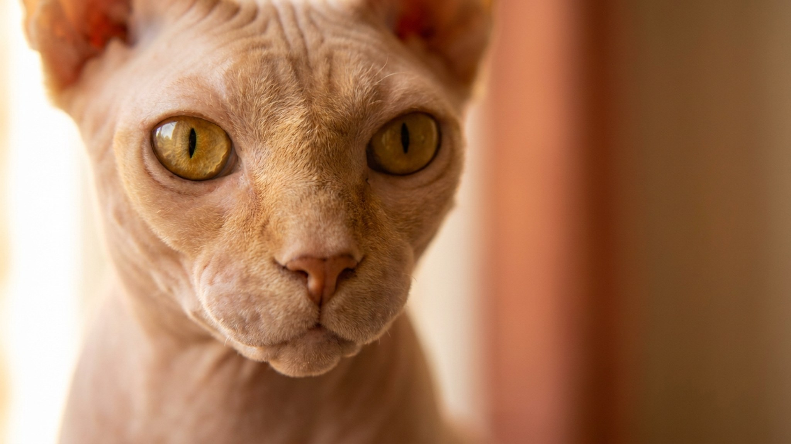

Большинство кошек терпят хозяина. Донской сфинкс его выбирает — и следует за ним из комнаты в комнату, ложится под одеяло, встречает у двери. За этой «собачьей» привязанностью стоит и особая теплолюбивость: лысый кот буквально живёт теплом и расходует больше энергии, чем пушистые сородичи. Разбираем характер, быт и кому эта порода подойдёт по-настоящему.
🐾 Здоровье питомца под контролем
AI-ветеринар, дневник здоровья и персональные советы для вашего питомца — установите AnimaLife бесплатно.
Донской сфинкс — одна из самых общительных пород среди кошек. Он не просто терпит присутствие человека рядом — он его активно ищет. Ходит следом, требует контакта, мурчит в ответ на разговор, забирается на руки без приглашения.
Донской сфинкс лишён шерсти — его тело отдаёт тепло напрямую в окружающую среду. Поэтому кот постоянно ищет источник тепла: забирается под одеяло, прижимается к батарее, устраивается между ногами хозяина. Это не причуда, это базовая физиология породы.
🐾 Первая помощь — всегда под рукой
AnimaLife подскажет, что делать в тревожной ситуации с питомцем ещё до визита к врачу. Откройте в один тап.
🐾 Понравился разбор?
Подпишитесь на канал — каждый день разбираем по одному тревожному симптому у кошек и собак: что в пределах нормы, а когда пора к врачу. Подпишитесь, чтобы не пропустить разбор, который может спасти здоровье вашего питомца.
Лысый кот тратит значительную часть энергии на поддержание температуры тела — процесс, который у пушистых сородичей частично берёт на себя шерсть. Из-за этого у донского сфинкса метаболизм активнее, и он ест больше, чем кот той же комплекции с шерстью.
Режим кормления лучше разбить на 3–4 небольших приёма в день — это удобнее для пищеварения и соответствует природному ритму. Конкретные объёмы и марку корма стоит подобрать вместе с ветеринаром, исходя из возраста и веса кота.
Эта порода создана для людей, которые проводят дома значительную часть времени и хотят настоящего общения с животным, а не независимого питомца в фоне. Донской сфинкс будет счастлив в семье, где есть дети, другие животные и живая активность в квартире.
Порода не подходит тем, кто целыми днями отсутствует, часто путешествует или предпочитает кошку «для красоты, но чтобы не мешала». Донской сфинкс будет мешать — активно и с удовольствием.